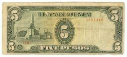
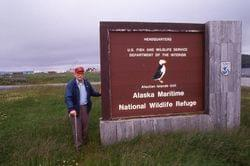
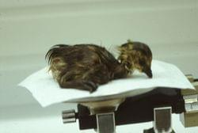
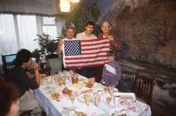
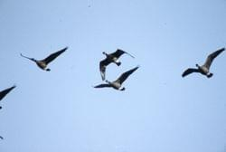
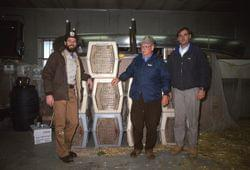
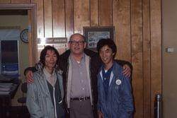

George attended St. Cloud Teacher's College now known as St. Cloud State University to study biological sciences. One of Forrest's favorite treats was a care package from the family garden full of squash and other fresh vegetables.
Forrest graduated from St. Cloud State Teachers College with a bachelor's degree in 1942 before going on to teach physics and biology at East Chain Lake school.
Army, 37th Infantry Division, World War II, 1943 - 1946
In 1943, Forrest was inducted into the Army's 37th Infantry Division at Fort Snelling, Minnesota. Lee arrived at the Pacific Theater in on October 30th, 1944 seeing action in New Guinea, the Northern Solomons, and Luzon, Philippines.
While abroad GIs were allowed to ship personal effects home. Forrest traded a satchel of cigarettes for a pair of bookends from a shopkeeper. He sent home Japanese rifles, bayonets, and propaganda among other gifts.
Forrest was honorably discharged on February 15th, 1946 after receiving several awards including the Good Conduct medal and the Philippine liberation ribbon with bronze star.
US Army 40th Division landing at Lingayen Beach 1945, Lingayen, Pangasinan Province, Luzon Island, Philippines.
Photo by U.S. Army Soldier from
John Tewell,
CC BY-NC 2.0.
US Army 40th Division passing through Bacolod, Negros, Philippines.
Photo by U.S. Army Soldier from
John Tewell,
CC BY-NC 2.0.
American amphibious vehicle firing on Japanese positions along the Pasig River.
Photo by U.S. Army Soldier from
John Tewell,
CC BY-NC 2.0.

Currency issued by the Japanese government in the Phillipines during World War II.
Photo by
Marilyn Acosta,
CC BY-SA 2.0.
University of Minnesota, 1946 - 1948
After returning to the states and recovering from Malaria Forrest continued his education at the University of Minnesota with financial support fromm the GI Bill. Lee attended lecures by none other than Aldo Leopold, author of the Sand County
Almanac. He received a graduate degree in wildlife management and botany in 1948.
Goldy Gopher, University of Minnesota. Logo from
Wikipedia commons,
Fair use of copyrighted material.
Minnesota Conservation Department, 1949
Forrest moved to St. Paul, Minnesota to start career with the Minneosta Conservation Department where he conducted aerial game surveys with Minnesota Department of Natural Resources taking aerial photographs “all over Minnesota.”
Rediscovering the Giant Canada goose, 1962
Forrest had been studying a flock of large Canada geese on Silver Lake at Rochester, Minnesota and invited waterfowl experts in for trapping and further examination. The Silver Lake flock turned out to be Branta canadensis maxima, a
species long thought to be extinct.
Canada geese at Silver Lake, Rochester, Minnesota. Photo by
Derek Bakken,
CC BY 2.0.
Northern Prairie Wildlife Research Center Canada goose production and restoration program, 1962
Forrest and his family moved to Jamestown, North Dakota where Forrest would head the Northern Prairie Wildlife Research Center's Canada goose production and restoration program.
Forrest Lee banding geese at Chase Lake National Wildlife Refuge.
Northern Prairie Wildlife Research Center in Jamestown, ND. Photo by USGS.
Forrest Lee with a cackling goose. Photo courtesy of Northern Prairie Wildlife Research Center.
Forrest Lee with an incubator tray. Photo courtesy of Northern Prairie Wildlife Research Center.
Forrest made his first trip to the Aleutians - photo of him at refuge headquarters at Adak AK. He also went to Amchitka Island on this trip.

Forrest Lee at Alaska Maritime National Wildlife Refuge in 1995.
Aleutian cackling goosling ready to be measured.
Aleutian cackling goosling.
Aleutian cackling gooslings in a brooder.
Aleutian cackling gooslings in lupine.

Aleutian cackling hatchling being weighed.
Aleutian cackling goose hatchlings in an incubator.

Forrest Lee with a Family in Kamchatka, Russia October 1992.
Forrest Lee posing for a photo with Fumio Sakumo of Japan in Kamchatka, Russia 1992.
Dr. Nickolai Gerasimov greeting Forrest Lee on translocation flight to Kamchatka September 30th, 1992.jpg.

Flying Aleutian geese.

Forrest Lee in Anchorage with crates of Aleuthian cackling geese ready to be shipped to Kamchatka, September 30th, 1992.
Forrest Lee feeding Aleutian cackling goose during 1994 translocation.

Forrest Lee with members of the Japanese Association for Wild Goose Protection, May 1983.
Rasing geese on Amchitka Island, Alaska, 1976 - 1979
Forrest spent May through August each year on Amchitka Island raising Aleutian cackling geese.
Aleutian goose recovery team at Amchitka Island airport June 24th, 1978.
Forrest Lee weighing a gosling.
Forrest Lee at Amchitka Island February 1978.
Forrest Lee on Amchitka Island, summer 1979.
Buldir Island, Alaska, 1978
Forrest at Buldir Island, a fox-free island where a remnant population of Aleutian cackling geese was discovered after they were thought extinct. Forrest prepared geese for translocation to Agattu Island.
Sunrise en route to Buldir Island, 1978.
Seabirds at sunset on Buildir Island. Photo by R. Dugan, USFWS.
Aleutian geese held prior to their release.
Aleutian cackling goose.
Aggatu Island, Alaska, 1980
Forrest translocated Aleutian cackling geese to Agattu Island.